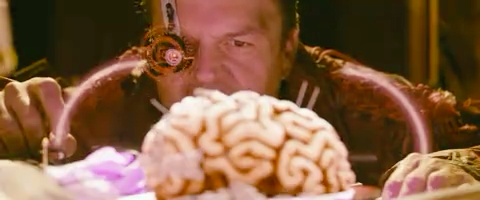
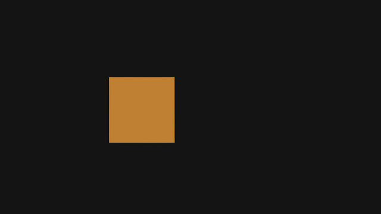

映川 / 0.3.4 · 实际处理输出
同一帧，比较噪点与质感。
同一个解码时间戳 1.000 s · 输入与输出均为 480 × 200 · 已建立时域参考
原片人工加入噪声的测试片段
流式修复时域降噪 · 跟随源尺寸
这帧中，背景和面部的细小颗粒有所减弱，明暗与颜色接近原帧。修复并没有把原本模糊的细节变成清晰纹理；较强降噪也可能使细节更柔和。此样本用于检查实际差异，不代表所有影片都有同样提升。
固定位置切换
同一位置放大到 2 倍，点击切换，不改变时间戳。也可在播放器“画质设置”中打开“同帧分屏”。
运动插帧不是重复帧
24 fps 转换使用均匀的 1/60 秒时间格点。下图是同一运动测试的中间时刻：物体被推算到中间位置。完整报告还比较了复制和简单像素混合；该测试验证运动补偿内容，不代表播放器已经稳定显示 60 fps。
运动模型生成的中间帧
已知运动的参考真值 查看逐项验证数据
影片测试画面：《Tears of Steel》 · © Blender Foundation / mango.blender.org · CC BY 3.0。来源及退化生成方法见项目研究记录。本页使用程序实际输出 PNG，未生成或美化结果。